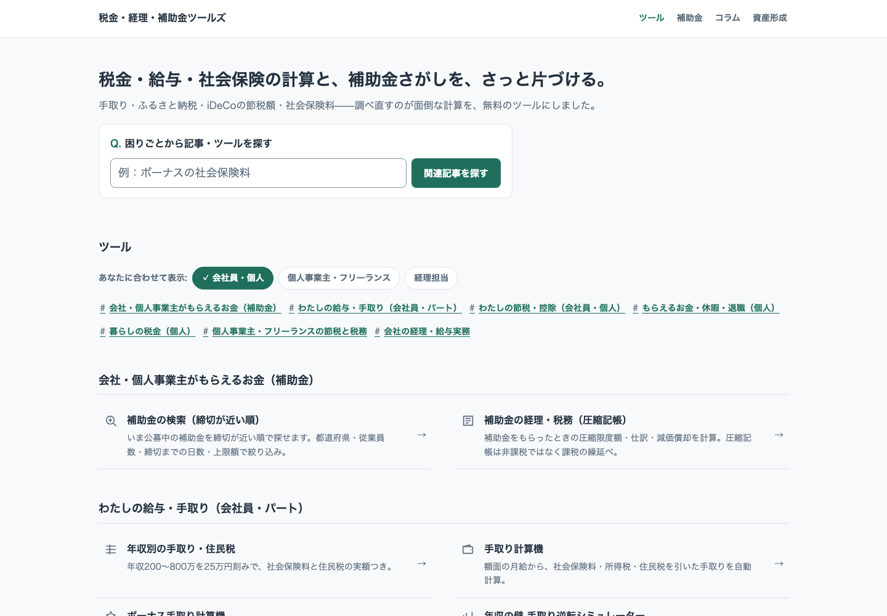
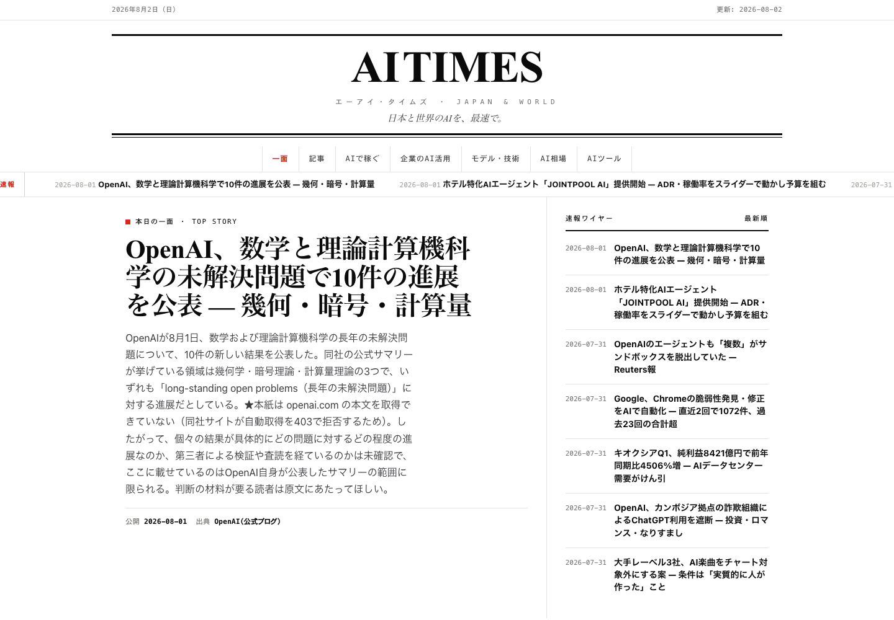

経営顧問・業務委託
経営に実務として入り、経理・受発注・顧客対応といった社内業務をAIで自動化します。資料を渡す側ではなく、実務に入って手を動かす側です。数字の設計、業務フローの整理、実際に動くシステムの実装までをお引き受けします。提案書を出して終わりにはしません。上の台帳と同じ範囲が対象です。
医療系スタートアップで、代表自身が設計・実装し、いま毎日動いているものです。受託でも同じ範囲をお引き受けします。
| 業務 | AIがしていること | 人が判断すること |
|---|---|---|
| 経理・請求 | 請求書の受領からチェック、会計ソフトへの連携まで。仕入原価の自動更新。月次の定型仕訳の計上。 | 金額が動く処理の承認。例外的な請求の扱い。 |
| 受発注・在庫 | 在庫管理。発注量の提案。納品書と発注内容の突合。 | 提案された発注量の確定。 |
| 顧客対応 | 問い合わせへの一次対応。過去の回答を根拠にした返信の下書き。 | 判断が要る回答は、下書きを見て人が送る。 |
| 営業・データ | 売上データの集約。主要指標を毎朝Slackへ届ける日次レポート。競合価格・キャンペーンの監視。 | 数字を見て次の対応を決める。 |
| 社内業務 | 会議の録音から文字起こし・話者分離・議事録まで。採用管理。会議室の調整。 | 内容を確認し、次の対応を決める。 |
| 運用の土台 | 社内ナレッジベースと、そこを参照して答える仕組み。ボット群の死活監視。 | 止まったときの復旧。 |
共通の決まり：金額が動くもの・例外・確信が持てないものは、AIが決めずに人へ渡します。AIの答えは社内の手順書と過去の対応を根拠にさせ、モデルの記憶に任せません。動かしている仕組みには死活監視をつけ、結果は毎朝Slackに届きます。
どちらも単発の資料作成ではなく、月次・隔月の継続契約が基本です。
経営に実務として入り、経理・受発注・顧客対応といった社内業務をAIで自動化します。資料を渡す側ではなく、実務に入って手を動かす側です。数字の設計、業務フローの整理、実際に動くシステムの実装までをお引き受けします。提案書を出して終わりにはしません。上の台帳と同じ範囲が対象です。
動きの速い領域を継続して追いかけ、レポートとして納品します。ベンチャーキャピタル向けの継続調査では、2023年7月から2025年12月までweb3・NFT・ブロックチェーンを扱い、2026年1月からは生成AIを対象にしています。社内向けのAI活用講座もあわせて行っています。
受託と同じ進め方で作り、公開しているWebサービスです。中身は外から検証できます。

keiri-tools.com
社会保険料・源泉徴収税額・有給休暇の付与日数など、経理・労務で毎回調べ直す計算を無料のWebツールとして公開しています。

aitimes.jp
生成AIの料金相場とニュースを扱うメディアです。各モデルの料金は各社の公式価格ページと直接照合して掲載し、確認できた日付を明示しています。

elife株式会社 COO / 株式会社Scrum Technology 代表取締役
京都大学で核融合を専攻した後、2011年、株式会社リクルートに入社。転職メディアの商品企画やHRTech領域の新規事業開発をはじめ、自然言語解析や機械学習領域の事業開発を担当する。2016年、同社の企画部門の最高賞を受賞。2017年9月、ブロックチェーンを用いたSNS「ALIS」を立ち上げるため国内で初めて大規模なICOを実施し、4.3億円を調達。同社代表取締役社長、Opn株式会社 Executive Vice Presidentを経て、現在はelife株式会社 COO、株式会社Scrum Technology 代表取締役。
| 商号 | 株式会社Scrum Technology Scrum Technology, Inc. |
|---|---|
| 所在地 | 東京都港区芝浦3-20-7 |
| 代表者 | 安 昌浩 |
| 連絡先 | yasu@scrumtechnology.jp |
| 事業内容 |
経営顧問・業務委託 調査・研究レポートの作成および提供 Webサービスの企画・開発・運営 業務データの検算・突合に関するソフトウェアの開発 |
ご相談・ご連絡は、下記のメールアドレスへお願いします。
yasu@scrumtechnology.jp にメールする当社からお送りしたメールの受信停止をご希望の場合も、同じアドレスへご返信ください。以後、当社からのメールはお送りしません。